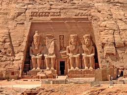

The Egyptian monuments that tell Stories across Thousands of years, So come to learn about them
The Karnak Temple
The Karnak Temple Complex, commonly known as Karnak, comprises a vast mix of temples, pylons, chapels,
and other buildings near Luxor, Egypt.
Construction at the complex began during the reign of Senusret I (reigned 1971–1926 BCE)
in the Middle Kingdom (c. 2000–1700 BCE) and continued into the Ptolemaic Kingdom (305–30 BCE), although
most of the extant buildings date from the New Kingdom.
The area around Karnak was the ancient Egyptian Ipet-isut ("The Most Selected of Places")
and the main place of worship of the 18th Dynastic Theban Triad, with the god Amun as its head.
It is part of the monumental city of Thebes, and in 1979 it was added to the UNESCO World Heritage List
along with the rest of the city.
The Karnak complex gives its name to the nearby, and partly surrounded, modern village of El-Karnak, 2.5 kilometres (1.6 miles) north of Luxor.

The Grand Egyptian Museum
The Grand Egyptian Museum, also known as the Giza Museum, is an archaeological museum under construction
in Giza Egypt, about 2 kilometres from the Giza pyramids.
The Museum will host over 100,000 artifacts from ancient Egyptian civilization,
including the complete Tutankhamun collection,
And many pieces will be displayed for the first time. With 81,000 m2 (872,000 sq ft) of floor space,
it will be the world's largest archeological museum.
It is being built as part of a new master plan for the Giza Plateau, known as "Giza 2030".
The GEM will also host permanent exhibition galleries, temporary exhibitions, special exhibitions,
children museum, and virtual and large format screens with a total floor area of 32,000 m2.
The Temple of Abu-Simbel

Abu Simbel is a historic site comprising two massive rock-cut temples in the village of Abu Simbel,
Aswan Governorate, Upper Egypt, near the border with Sudan. It is located on the
western bank of Lake Nasser, about 230 km (140 mi) southwest of Aswan (about 300 km (190 mil) by road).
The twin temples were originally carved out of the mountainside in the 13th century BC,
during the 19th Dynasty reign of the Pharaoh Ramesses II. Their huge external
rock relief figures of Ramesses II have become iconic. His wife, Nefertari, and children can be
seen in smaller figures by his feet. Sculptures inside the Great Temple commemorate
Ramesses II's heroic leadership at the Battle of Kadesh.
The Azhar Mosque
Al-Azhar Mosque, known in Egypt simply as al-Azhar, is a mosque in Cairo, Egypt,
in the historic Islamic core of the city. Commissioned as the new capital of the Fatimid Caliphate in 970,
it was the first mosque established in a city that eventually earned the nickname "the City of a Thousand Minarets".
Its name is usually thought to derive from az-Zahrā, a title given to Fatimah, the daughter of Muhammad.
After its dedication in 972, and with the hiring by mosque authorities of 35 scholars in 989,
the mosque slowly developed into what it is today.
The Temple of Dendera

The entirety of the complex sprawls across roughly 40,000 square meters and is surrounded by a sizable
mudbrick wall.
Dendera, an oasis on the banks of the Nile, was inhabited by thousands at its peak.
Due to its massive size, the structures throughout the complex were constructed over many eras,
such as the Middle Kingdom, the Ptolemaic Era, and the period characterized by Roman provincial rule.
There is evidence that there was an even earlier building on this site, circa 2250 B.C.E.,
which could have begun during the reign of Pepi I and completed during the reign of
his son, Merenre Nemtyemsaf I.
Evidence also exists of a temple in the Eighteenth Dynasty (ca. 1500 BC).
The earliest extant (surviving) building in the compound today is the mammisi raised by
Nectanebo II – last of the native pharaohs (360–343 BC).
The Hanging Church

The Hanging Church is named for its location above a gatehouse of Babylon Fortress,
the Roman fortress in Coptic Cairo (Old Cairo); its nave is suspended over a passage.
The church is approached by twenty-nine steps;
early travelers to Cairo dubbed it "the Staircase Church".
The land surface has risen by some six metres since the Roman period, so the Roman
tower is mostly buried below ground, reducing the visual impact of the church's elevated position.
The entrance from the street is through iron gates under a pointed stone arch.
The nineteenth-century facade with twin bell towers is then seen beyond a narrow courtyard
decorated with modern art biblical designs. Up the steps and through the entrance is a
further small courtyard leading to the eleventh-century outer porch.
The Temple of Hatshepsut

The mortuary temple of Hatshepsut is a mortuary temple built during the reign of Pharaoh Hatshepsut
of the 18th Dynasty of Egypt.
Located opposite the city of Luxor, it is considered to be a masterpiece of ancient architecture.
Its three massive terraces rise above the desert floor and into the cliffs of Deir el-Bahari.
Her tomb, KV20, lies inside the same massif capped by El Qurn, a pyramid for her mortuary complex.
At the edge of the desert, 1 km (0.62 mi) east, connected to the complex by a causeway lies the accompanying
valley temple.
Across the river Nile, the whole structure points towards the monumental Eighth Pylon, Hatshepsut's most
recognizable addition to the Temple of Karnak and the site from which the procession of the Beautiful Festival of the Valley departed.
The temple's twin functions are identified by its axes: its main east-west axis served to receive the barque of
Amun-Re at the climax of the festival, while its north-south axis represented the life cycle of the pharaoh from coronation to rebirth.
The Bibliotheca Alexandrina
The Bibliotheca Alexandrina is a major library and cultural center on the shore of the Mediterranean Sea
in Alexandria, Egypt. It is a commemoration of the Library of Alexandria, once one of the largest libraries worldwide,
which was lost in antiquity. The idea of reviving the old library dates back to 1974
when a committee set up by Alexandria University selected a plot of land for its new library.
Construction work began in 1995, and after some US$220 million had been spent,
the complex was officially inaugurated on 16 October 2002.
In 2009, the library received a donation of 500,000 books from the Bibliothèque nationale de France.
The gift makes the Bibliotheca Alexandrina the sixth-largest Francophone library in the world.
The Temple of Edfu
The Temple of Edfu is an Egyptian temple located on the west bank of the Nile in Edfu, Upper Egypt.
The city was known in the Hellenistic period after the chief god Horus, who was identified as Apollo
under the interpretatio graeca.
It is one of the best preserved shrines in Egypt.
The temple was built in the Ptolemaic Kingdom between 237 and 57 BC.
The inscriptions on its walls provide important information on language, myth and religion
during the Hellenistic period in Egypt.
In particular, the Temple's inscribed building texts provide details of its construction,
and also preserve information about the mythical interpretation of this and all other temples as the Island of Creation.
There are also important scenes and inscriptions of the Sacred Drama which related the age-old conflict
between Horus and Seth.
They are translated by the Edfu-Project.